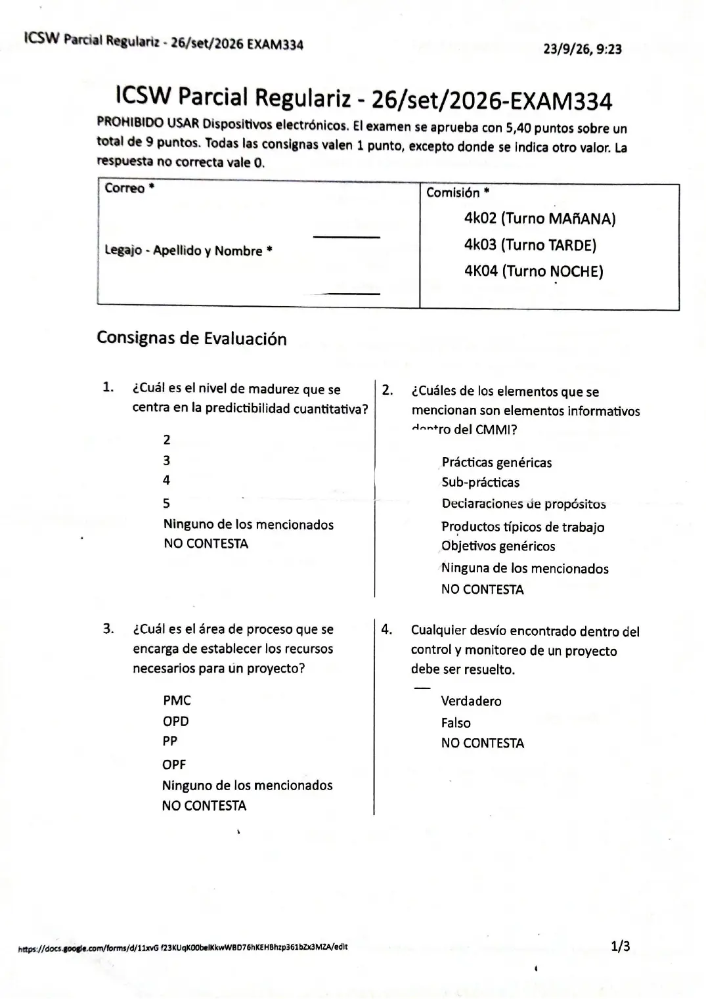
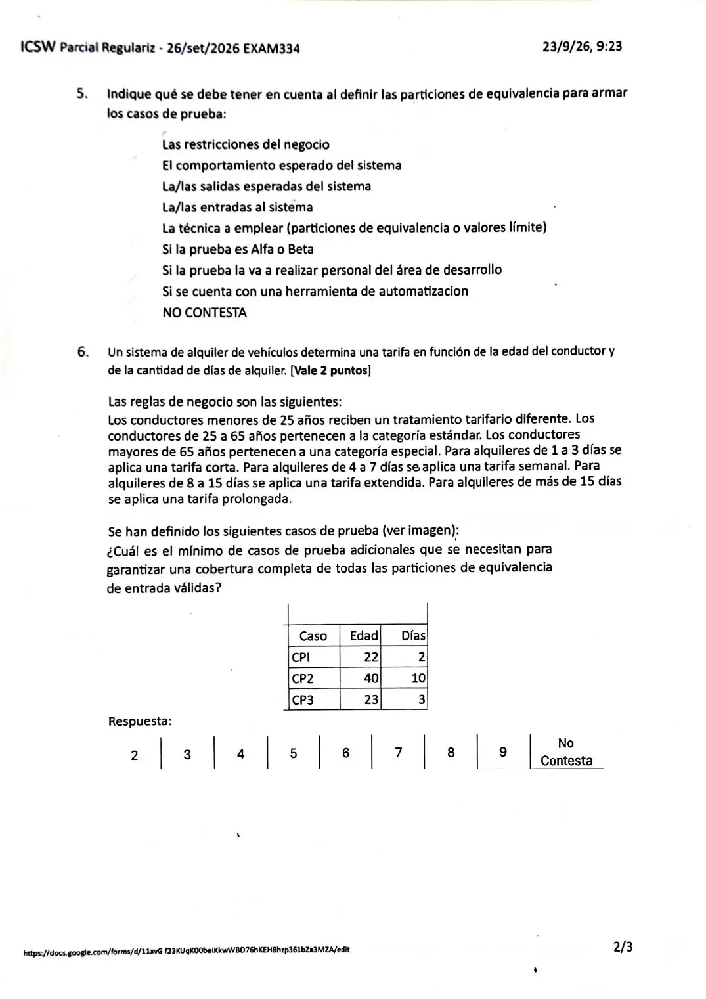
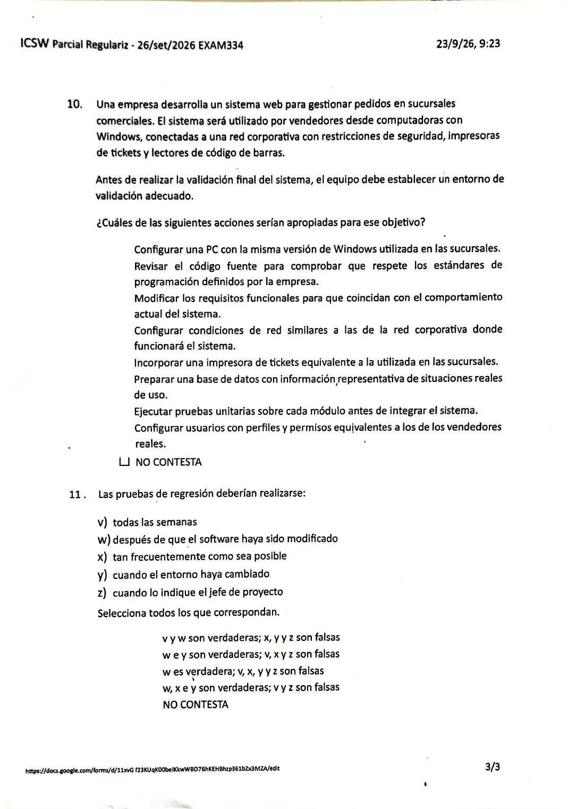

Regularización, 26/09/2026
Parcial de regularización, 26/09/2026
Enunciado






Preguntas con opciones
Salen de este examen, adaptadas. Dejalas para el final, porque las opciones pueden dar pistas.
- 1
¿En qué nivel de madurez el rendimiento de los procesos es predecible cuantitativamente?
Se tomó: Regularización 26/09/2026, adaptada
El libro lo dice del nivel 4. En el 3, los procesos normalmente solo son predecibles cualitativamente.
Propuesta de respuesta
Respuesta no verificada. La propuso Luta Studios con inteligencia artificial y ningún docente la revisó. Puede tener errores.
1. Predictibilidad cuantitativa. Nivel 4. En el nivel 4, gestionado cuantitativamente, el rendimiento se controla con técnicas estadísticas y es predecible cuantitativamente. El 3 es predecible solo cualitativamente.
2. Elementos informativos. Sub-prácticas, Declaraciones de propósitos y Productos típicos de trabajo. Las prácticas genéricas son componentes esperados. Los objetivos genéricos son las metas genéricas, que son requeridas.
3. Recursos necesarios para un proyecto. PP. Los planifica PP SP 2.4, dentro de la meta de desarrollar el plan. PMC después los monitorea, pero no los establece.
4. Cualquier desvío debe ser resuelto. Falso. PMC analiza los problemas y decide si hacen falta acciones correctivas (SP 2.1). Las acciones se toman cuando el proyecto se desvía significativamente del plan, no ante cualquier diferencia.
5. Qué tener en cuenta al definir las particiones. Las restricciones del negocio, El comportamiento esperado del sistema, La/las salidas esperadas del sistema y La/las entradas al sistema. Una partición agrupa valores que el programa trata igual, y eso sale de las reglas del negocio y de lo que el sistema tiene que hacer. Se definen particiones de entrada y también de salida. Si la prueba es alfa o beta, quién la hace o si hay una herramienta no cambia las particiones.
6. Alquiler de vehículos. 2 casos adicionales.
| Atributo | Particiones válidas | Cubiertas por CP1 a CP3 |
|---|---|---|
| Edad | Menor de 25, de 25 a 65, mayor de 65 | Menor de 25 (CP1 y CP3) y de 25 a 65 (CP2) |
| Días | De 1 a 3, de 4 a 7, de 8 a 15, más de 15 | De 1 a 3 (CP1 y CP3) y de 8 a 15 (CP2) |
Faltan una partición de edad (mayor de 65) y dos de días (de 4 a 7 y más de 15). Cada caso nuevo puede cubrir una partición de cada atributo a la vez, así que alcanza con dos.
| Caso | Edad | Días | Cubre |
|---|---|---|---|
| CP4 | 70 | 5 | Mayor de 65 y de 4 a 7 |
| CP5 | 30 | 20 | Más de 15 (la edad repite una ya cubierta) |
CP3 no suma nada, porque repite las particiones de CP1.
7 a 9. El archivo no trae estas consignas.
10. Entorno de validación. Son apropiadas:
- Configurar una PC con la misma versión de Windows utilizada en las sucursales.
- Configurar condiciones de red similares a las de la red corporativa donde funcionará el sistema.
- Incorporar una impresora de tickets equivalente a la utilizada en las sucursales.
- Preparar una base de datos con información representativa de situaciones reales de uso.
- Configurar usuarios con perfiles y permisos equivalentes a los de los vendedores reales.
VAL SP 1.2 arma un entorno que reproduzca el uso previsto en su entorno previsto, con herramientas, sistemas de interfaz reales o simulados y otros recursos. Revisar el código contra estándares es PPQA o VER, las pruebas unitarias son VER, y cambiar los requisitos para que coincidan con lo construido no es validar.
11. Pruebas de regresión. w e y son verdaderas; v, x y z son falsas. Myers dice que se guardan los casos y se ejecutan de nuevo después de cambiar otros componentes, que es la w. La y también vale, porque un cambio de entorno puede romper lo que funcionaba. La práctica de CM de la cátedra lo muestra, con una empresa que vuelve a probar sus aplicaciones cada vez que cambia el sistema operativo. Una frecuencia fija o la orden del jefe de proyecto no son el criterio.
Respuesta no verificada. Puede tener errores.
Se armó con la página Regularización, secciones Componentes del modelo, Niveles, Particiones de equivalencia, Entorno de validación y Principios, y la tabla de prácticas de Aprobación directa.
Quedó en duda: El archivo no trae las consignas 7 a 9. En la 4 va Falso porque PMC corrige los desvíos significativos, una palabra que no está en el resumen. En la 5 no entra la técnica, aunque la aprobación directa del 08/11/2025 la suma en una consigna parecida. Los 2 casos de la 6 dependen de la regla del mínimo de casos, que la materia tiene en duda. En la 11 la y va como verdadera por la práctica de volver a probar cuando cambia el sistema operativo, y otra lectura la deja afuera.
¿Cómo te fue?
Marcá cada tema del examen. Las preguntas con opciones ya se corrigieron solas.
- CMMICMMI, en Regularización
- ParticionesParticiones de equivalencia, en Regularización
- ValidaciónVerificación y validación, en Regularización